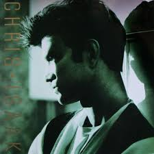
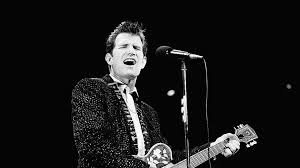
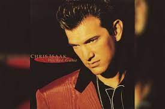
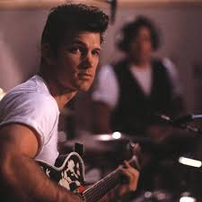
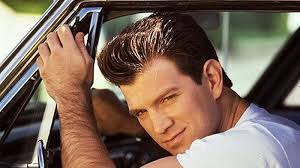

Chris Isaac





5 fun facts about rock crooner Chris Isaak, playing in Paso
His “Wicked Game” video shoot wasn’t as sexy as it looked.
His good looks come courtesy of boxing gloves.
He’s happy to spruce up with a snazzy suit.
He’ll risk death for a good wave.
He’s a big deal Down Under.
Chris Isaak